Atlantis, by district
A vertical city of memory, rebuilt by the diaspora on the ruins of the Fall. The low city lives by water and trade in a twilight that never ends (Mirror Thread Bay, Naraka Market). The middle city is the concrete inheritance of the New Boroughs, still burned orange by the Fall’s smoke and crossed on catwalks above it (the Orange Haze, Cenotaph Rail, the Shrouded Arcade). The old order’s cold blue towers still keep watch (the Hive, the Overseer). On the mountain the new high city grows gardens in the air (Ankhu Spires), reached through the Light Gate into the Central Plaza. Its civic heart listens: radio dishes stand in Cortex Commons. Above everything, the sky is ancestral (the Ascent).
colour by height
| the sky | star white, cosmic violet, deep ultramarine — the Ascent |
| the high city | terracotta and coral stone, periwinkle mist, violet underlight, one red core — Ankhu Spires |
| the towers | cold blue and indigo, signal red, the moon — the Hive, the Overseer |
| the middle | sodium orange smog, rust, raw concrete — the Orange Haze, Cenotaph Rail; screen-light — the Arcade |
| the ground | teal steel and turquoise water, tungsten bulbs, coral neon, bioluminescent cobalt — Naraka, the Bay |
| the civic | pale stone, rose terraces, warm windows at dusk — Cortex Commons, the Plaza, the White Temple |
how to read this
Every palette is measured from the images: made of is the body of the frames; glows with is their bright, saturated light. Numbers are the views (hover for the prompt, click for the full image). Places are on the movie map’s own coordinates and districts.
The fourteen poems, placed
Naraka Market
twilight that never ends · humid, crowded, devotional, improvised · someone else’s rain
architecture
shipping containers stacked two to four high into shops and rooms; corrugated awnings; cable webs and string lights across the street; AC units; stair alleys climbing between walls; the underpass flooded into a shadow-pool; a teahouse breathing vapor
materials
rusted teal and turquoise steel, painted plywood, wet asphalt as a mirror
across the eras
harbor → docks → warehouses → the Fall → clubs under neon → the twilight market
signature
always 19:00–20:30 (twilight-only) · light rain · teal haze
key buildings and places
- the Container Rows (17–20)
- the Underpass Shadow-Pool, where children stand in the reflection (92–93)
- the Teahouse of Saints (96)
- the Hidden Stairwells (44, 45, 61)
- the market crush (59, 60)
moments
- the shadow-pool ritual (93)
- vapor bloom outside the teahouse (96)
- the club crowd dissolving in warm haze (36)
the poems it holds
- 01 Out of Life — his high-rise room in The Severn above the market, dusk into night
- 14 Hot Minute — the harbor party, the haze that takes him
- 07 DJ Turn Me Up borrows its crowd (36)
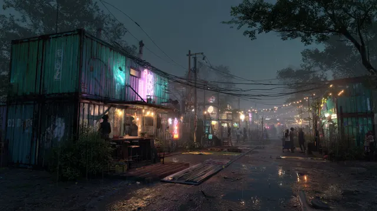
17Afrofuturist twilight-only street Naraka Market ben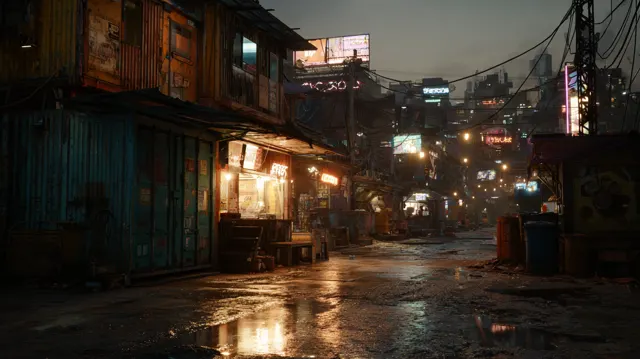
18Afrofuturist twilight-only street Naraka Market ben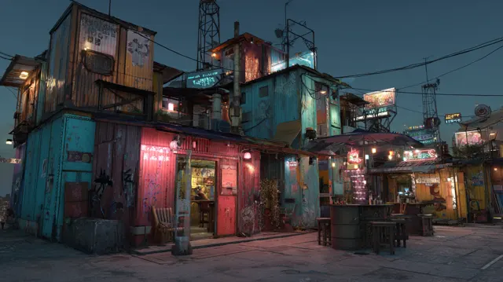
19Afrofuturist twilight market Naraka Market district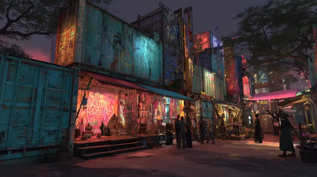
20Afrofuturist twilight market Naraka Market district36untitled view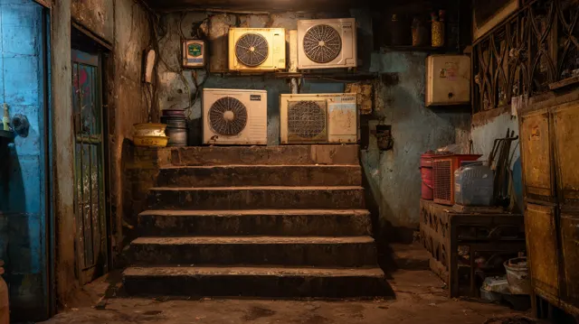
44Hidden stairwell in Afro-Diasporic urban corridor b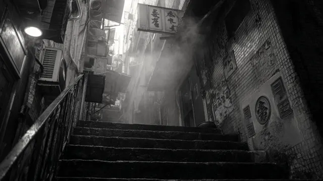
45Hidden stairwell in narrow alley of Afro-Diasporic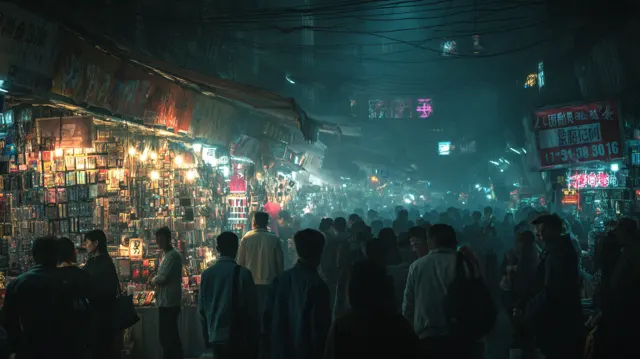
59Naraka Market at twilight focusing on dense shiftin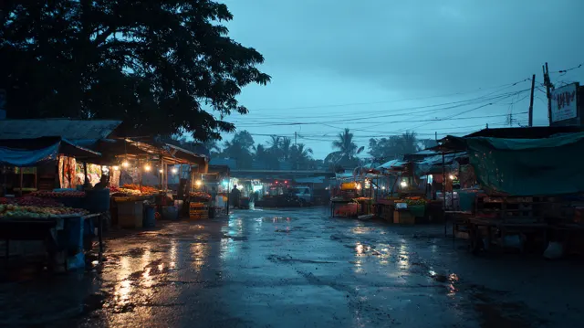
60Naraka Market at twilight focusing on subtle shifts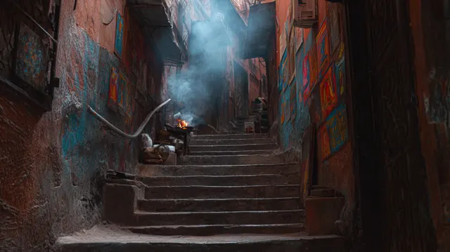
61Narrow alley with hidden stairwell in Afro-Diaspori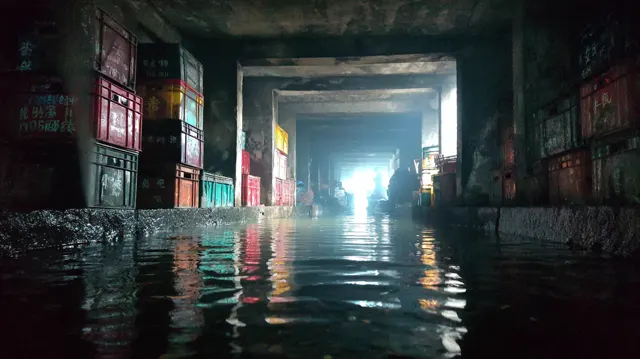
92underpass shadow-pool ritual in Naraka Market water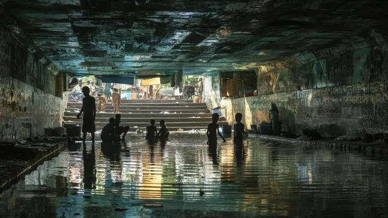
93underpass shadow-pool ritual in Naraka Market water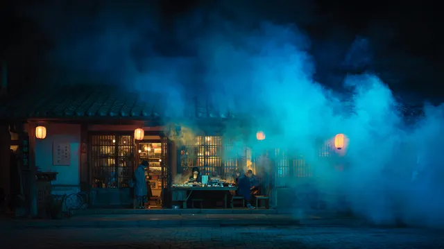
96vapor bloom outside street-teahouse of saints at niThe Orange Haze
oppressive scale, heat, solitude · one figure on a bridge · the Fall’s air still burning
architecture
elevated concrete catwalks with glowing kerb strips; expressway undercrofts of pillars and stairs; brutalist slabs and a line of smokestacks; skyways through smog; a sodium tunnel stair with a single chair
materials
raw concrete, rust, soot; sodium light that colours everything
across the eras
field → mills → factories → the Fall (the fire) → ruins kept as a park → the haze that never lifted
signature
any hour, but always the haze: dense orange fog, sodium glow, silhouettes
key buildings and places
- the Orange Catwalk, an elevated walk along the expressways (84, 85)
- the Undercroft beneath the ring (1–3)
- the Smokestack Line (64)
- the Skyway through the smog (65, 79–81)
- the Stair with the Chair (5)
moments
- lightning crawling along the undercroft (1)
- a lone walker on the skyway (80, 81)
- shadow play beneath the solar bridges by day (77)
the poems it holds
- 10 Magic Ride — the motorcycle through tunnel light toward dawn: the undercroft and the skyway
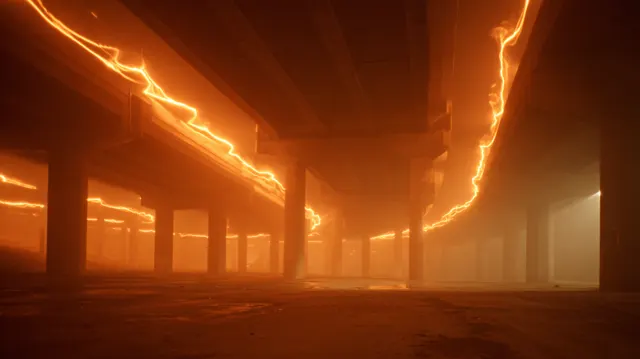
1Orange-Hazed Dystopia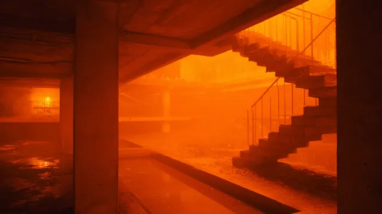
2Orange-Hazed Dystopia3Orange-Hazed Dystopia4Orange-Hazed Dystopia5Orange-Hazed Dystopia26Air burns orange--thick near-solid. Engines tick be64orange haze brutalist cityscape inspired by Blade R65orange smog skyway solitude oppressive scale and hu66orange smog skyway solitude oppressive scale and hu77shadow play beneath solar bridges sun-bleached asph79silhouette in hazy cityscape elevated concrete catw80silhouette of a lone figure walking on a narrow ind81silhouette walking on narrow platform air tasting l84The Orange Catwalk elevated concrete path glowing w85The Orange Catwalk elevated glowing concrete path pThe Hive
grandeur and dread · density · vertigo looking up · beacons blinking like a nervous system
architecture
dense slab towers and gothic needle spires; lattice signal towers with red and blue beacons; a megastructure atrium
materials
dark glass, steel lattice, wet concrete
across the eras
field → … → the towers of the New Boroughs (“a language made exact”) → darkened in the Fall → still standing, lit by signal
signature
night · mist · cold blue with pulsing red
key buildings and places
- the Signal Lattices (46–48)
- the Needles (12, 70)
- the Well, looking straight up (38)
- the atrium (10)
moments
- the city of needles burning seen from above (70)
the poems it holds
- 01 Out of Life — the high-rise, the haze, then cloud and total black
- 02 Flashing Lights — black space with lights flashing: the beacons
The Overseer
cold watchfulness · symmetry · the moon · sterile indigo
architecture
blue industrial pipework among towers; the old palace roofless under the moon; a canyon of slabs framing the moon; a glass skywalk over the indigo city
materials
glass, painted steel pipe, pale render gone blue
across the eras
rowhouses → … → the Overseer’s quarter, the old order’s watch
signature
moonlit · clear · cold; the one warm colour is an alarm crimson
key buildings and places
- the Moon Canyon (88)
- the Pipe Works (86)
- the Old Palace (87)
- the Skywalk (49)
- the mirrored skyline of blue and red (25)
moments
- the moon standing in the slot between towers (88)
the poems it holds
- 02 Flashing Lights — the winter-night flashback, headlights raking a dark room
Mirror Thread Bay
reflection, memory, tenderness · drowned rooms remembered · handprints on glass
architecture
turquoise lagoons with garden islands; boardwalks under the great bridge; flooded colonnades and atria with bioluminescent floors; submerged corridors; the oil-slick canal under the radio bridge; the sleep-dam wall with words
materials
water above all; concrete under water; moss; glass
across the eras
shore → fishing → harbor → harbor → flooded (the Fall) → promenade → the bay of mirrors
signature
night bioluminescence / daytime turquoise · water first
key buildings and places
- the Sleep-Dam, “REMEMBER THE …” (75, 76)
- the Drowned Atrium (53–56)
- the submerged corridors (57, 58)
- the Radio Bridge canal (63)
- the Bridge Boardwalk (24)
- the Lagoon (23)
moments
- handprints on the glass of a drowned corridor (57)
- the canal under the radio bridge at night (63)
the poems it holds
- 13 How to Win My Heart — the daylight harbor walk to the corner café (23, 24)
- 04 Nevermore — the shore at twilight, calm waves
- 03 How to Break off an Engagement — the storm and its aftermath: the flooded corridors
Cortex Commons
communal, civic, joyful · children running · the city listening to the sky
architecture
radio-telescope dishes set in the squares (WYGWYL radio, made civic); a sunken oculus forum; a mosaic canopy over the crowd; a misted square of glowing cubes; the cathedral among glass towers under the moon
materials
pale stone, wet paving painted with light, mosaic
across the eras
the old center’s square → … → the commons that listens
signature
dusk · blue hour, warm windows
key buildings and places
- the Listening Dishes (15, 16)
- the Oculus forum (14)
- the Canopy (21)
- the square of glowing cubes (22)
- the Cathedral Square (51)
moments
- children running across the light-painted square under a dish (16)
the poems it holds
- no poem lives here: it is where the city listens to them
The Light Gate & Atlantis Central Plaza
threshold, then arrival · dazzle · manifestation
architecture
a perimeter of transparent, high-frequency fences of light that becomes the gate; beyond it a circular plaza ringed by rose terraces; a hall of crystal trees over a mirror pool
materials
light itself at the gate; rose stone; crystal; still water
across the eras
the field of stones (the Shore) → … → the Light Gates open (Resurrection)
signature
still night · the gate’s white glare
key buildings and places
- the Light Gate (89, 90)
- the Central Plaza (33)
- the Hall of Crystal Trees (34)
moments
- the gate’s glare on wet ground (90)
the poems it holds
- 06 Resurrecting Atlantis — he sees the entrance, goes in through the gates
Ankhu Spires
altitude, breath, mist · gardens in the air · domestic life at height (laundry under the stars)
architecture
coral and terracotta spires with carved arches, a souk at their feet; mushroom-cap platforms on slender stems with hanging gardens; planter-pillars with trees above the cloud; sky bridges and observation decks; glass spires among palms; the Spire Elevator Shaft, a hundred-storey red core; laundry lines on the roofs
materials
terracotta, coral render, pale steel, glass, living green
across the eras
the lone peak → … → the high city, grown in Resurrection
signature
blue-hour mist · violet underlights at night
key buildings and places
- the Spire Elevator Shaft (82, 83)
- the Sky Gardens (28, 29, 31)
- the Observation Deck (27)
- the coral spires (8)
- the floating domes over the water (9)
- the Laundry Roofs (73, 74)
moments
- laundry under a starfield (73)
- looking down through the glass filament (99)
the poems it holds
- 08 Newly Single — the open-air rooftop club, the city glowing blue and pink below (28, 31, 11)
- 05 Bloodline — the night garden becomes the gardens in the air
- 04 Nevermore — the field below the spires
Cenotaph Rail
elegy, transit, height, rust · a figure at the railing above the mist
architecture
rusted platforms high above the city; viaduct arches carved with names (the cenotaph); wet stone steps down to the lake under the mountain; a platform in orange haze; a platform where the city dissolves into pixels
materials
rusted steel, carved stone, wet granite
across the eras
field → village → quarter → ruins (the Fall) → ruins walked as a monument → the rail that carries the names
signature
dawn and dusk
key buildings and places
- the Named Arches (43)
- the high platform (37)
- the Lake Steps (97)
- the haze platform (50)
moments
- a cleaning drone’s last memory, the city coming apart (98)
the poems it holds
- 11 New Day — dawn: he rides back to the shore, the ruins, mist on the sea (97)
- every journey between the realms: the spines
The Shrouded Arcade
spectacle and its ruin · a memory corridor · chrome and static
architecture
an abandoned mall with its escalators still lit; the LED canyon crossroads, a screen canopy of galaxies over an avenue; a neon memory corridor in red and blue; chrome doors in neon alleys
materials
chrome, LED skin, wet tile, dead shopfronts
across the eras
suburb → consumer district → abandoned → the arcade of screens
signature
rain · neon reflections
key buildings and places
- the LED Canyon (94, 95)
- the Shrouded Arcade (91)
- the Memory Corridor (62)
- the chrome doors (6, 7)
moments
- the street soaked in someone else’s rain (100)
the poems it holds
- 09 Yet Heard — the sidewalk crowd, neon, the moon in the puddles (62, 100)
- 02 Flashing Lights and 10 Magic Ride pass under the canopy (94)
The White Temple & its Pools
stillness, return · warm hall light · decades compressed
architecture
a white portico across a reflecting pool among trees; a mirror-pool hall framing the night skyline; the Reflecting Pool Mouth holding the stars
materials
white stone, still water, warm interior light
across the eras
the chapel on the tidal flat → loses its roof and bell in the Fall → the white temple on its ruins
signature
twilight into a lit porch
key buildings and places
- the Portico Pool (52)
- the Mirror Hall (42)
- the Reflecting Pool Mouth (72)
moments
- the stars held in the pool (72)
the poems it holds
- 12 Reunion — the hall in warm light, the grounds at twilight, the lit porch
- 11 and 13 begin here
The Ascent
the ancestors, the gifts, the soul leaving · the whole city seen at once
architecture
organic cosmic arches over a parade; the city as a blue crystal seen from above; the moon; the milky way over the spires; blue flowers over the night city; red ground under a single spotlight; the reconstructed skyline across the water
materials
starlight, nebula, night water
across the eras
always
signature
the heavens as a stage
key buildings and places
- the Ancestors’ Parade (68)
- the soul ascending over Atlantis (69)
- the moon (67)
- the milky way over the spires (41)
- the skyline across the water (35)
moments
- he enters the Ancestors’ parade, receiving cosmic gifts (68)
- his soul rising, seeing Atlantis whole (69)
the poems it holds
- 05 Bloodline — the gifts are stars and galaxies (68)
- 14 Hot Minute — floating in black (69, 67)
- the film’s overture and credits: the Powers-of-Ten descent and rise are this view (69)